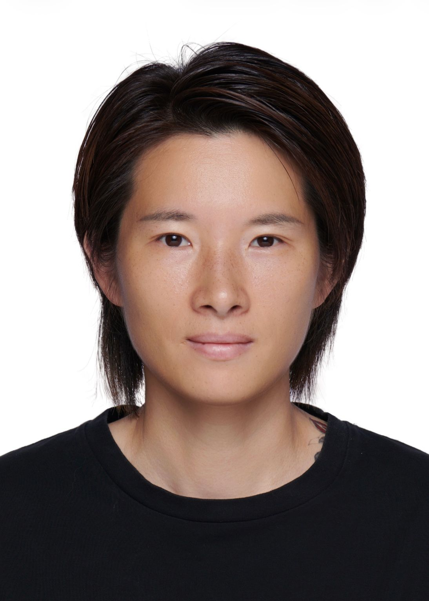

Cher Lyu
Master of Computer Science student at the University of Sydney · 13+ years in FPGA, embedded systems & product management
Sydney, Australia
About
I spent 13 years building the systems behind large-scale LED displays — first as an FPGA engineer designing real-time video processing logic, then as a product manager leading control-chip products from architecture to commercialization at Chipone Technology.
Now I'm bringing that system-level engineering foundation into software: I'm pursuing a Master of Computer Science at the University of Sydney (WAM 85.5), focusing on artificial intelligence, machine learning, and cybersecurity. I'm interested in roles where deep hardware understanding meets modern software and data — and where knowing how a signal actually moves through silicon still matters.
Email: xlyu0883@uni.sydney.edu.au
Experience
Product Manager — Chipone Technology
- Led end-to-end development of LED control chip products (ICND6603, ICND6620)
- Designed system-level data processing architecture for real-time video signals
- Coordinated R&D, testing and sales teams to deliver products on schedule
- Drove data-informed improvements from product performance and customer feedback
Technical Support Engineer — NovaStar Tech
- Managed key B2B clients and delivered end-to-end technical solutions
- Translated customer requirements into technical specifications with R&D
- Performed root cause analysis on system and product issues
FPGA Engineer — Colorlight Technology
- Developed FPGA logic and embedded systems for LED display control
- Implemented data processing and signal handling; board-level debugging and validation
FPGA Engineer — HISOME
- Designed FPGA and SoC systems with I2C, SPI and UART communication protocols
- Built video processing and real-time data transmission systems
- Integrated embedded software with hardware platforms
Projects
Sydney Music System
A database-driven music management system. Designed the relational schema, implemented full CRUD operations via JDBC, and enforced data integrity across the application layer.
Zoo Management System
An object-oriented management system designed for modularity and maintainability, with core functionality developed and verified through systematic testing.